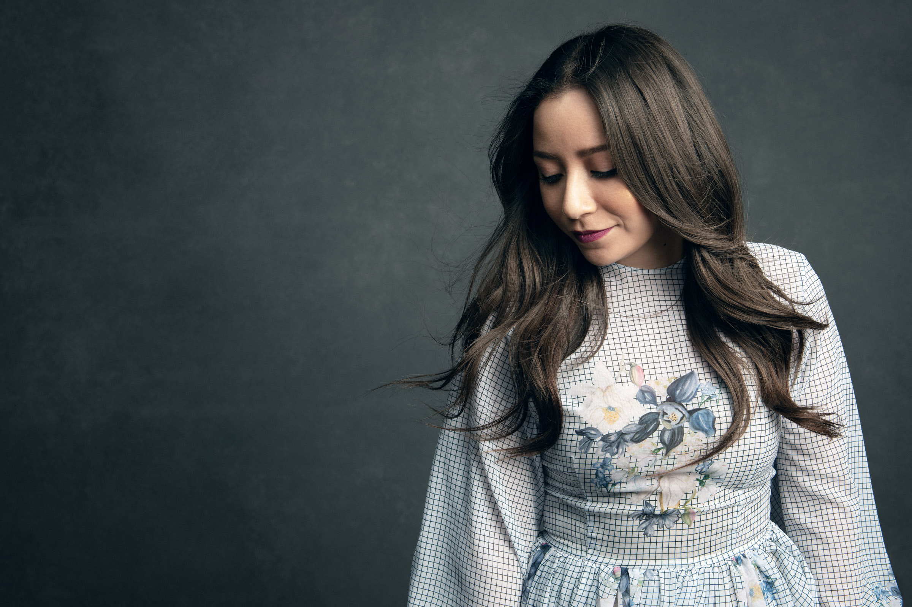
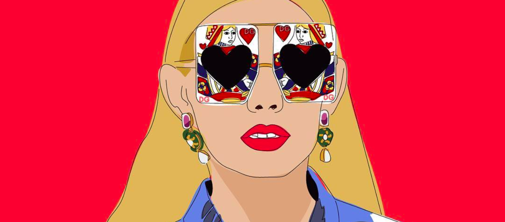

@vibesbyclaudia
Our new Fashion Art Instagram Account.
@vibesbyclaudia first started out as just a personal project that Claudia Argueta would work on
during her free time, but it has definitely blossomed into so much more.
The artist creates digital illustrations depicting iconic and day to day fashion moments – everything
from a Gucci ad to a Chanel photoshoot to the newest it-sneak on the block. She includes witty captions and
on-brand blurbs sketched next to the art. Claudia’s art is also extremely inclusive, depicting members of the
LGBTQ+ community, people of color, and people of all ages. It’s really awesome checking out her account and
seeing a grandma in Off White.
Claudia has been featured on different platforms most recently Harpers
Bazaar Taiwan, Grazia Mexico, Martha & Louisa, and Man Repeller.
The artist creates digital illustrations depicting iconic and day to day fashion moments – everything
from a Gucci ad to a Chanel photoshoot to the newest it-sneak on the block. She includes witty captions and
on-brand blurbs sketched next to the art. Claudia’s art is also extremely inclusive, depicting members of the
LGBTQ+ community.
Claudia has been featured on different platforms most recently Harpers Bazaar Taiwan, Grazia Mexico,
Martha & Louisa, and Man Repeller. She has also been appreciated by many designers, celebs, and personalities,
such as Zac Posen, Stefano Gabbana, Carine Roitfeld, Kate Bosworth, Giovanna Battaglia, Versace, The Volon, and
Marc Jacobs.
We sat down with the digital artist to discuss how she first got her inspiration, which designer
she’d love to collab with, and more. Check out the interview below!

How did you first get into art?
When I was a kid I loved to draw, and when I had to choose what career path to take I decided to
get my degree in Graphic Design. So, what I do now is a mix of both – digital illustration.
How did you first get inspiration to do fashion themed illustrations?
I’ve always loved fashion and I love graphic design. I used to buy fashion magazines to get inspo
for my graphic design projects. I would study fashion campaigns and loved the art direction behind photoshoots.
I would get inspired in the color palettes, prints in the clothing, the details behind each editorial. So, I
always appreciated fashion but never thought I could mix both worlds.
About a year ago, I wanted to create a “side project” where I could get my mind off my busy days. I was looking
at my IG when a Gucci campaign popped-up with memes. I thought to myself, I could do that with illustrations. I
made a couple, created my profile, and when I saw peoples positive reaction towards my work, I knew I had
something good in the making.
Which designers are your most favorite to depict?
Alessandro Michele, Karl Lagerfeld, and Maria Grazia Chiuri.
How do you come up with your unique phrases/words next to the illustrations?
I’ve always liked to make projects that have some sort of humor in them. I believe that when you can
make someone smile or laugh you can make someone feel identified, or make a deeper connection.
The illustrations that I make are of things that I really like. Most are thoughts that pop-up when I’m making an
illustration, my initial reaction when observing a fashion editorial, the perfect handbag, or the much needed
shoes I would love to own but can’t afford.
I also love a good meme, so when I see one that I can adapt or apply to my illustrations, I’ll use it as well.
Big designers like Gucci have done very Internet-inspired campaigns (with memes,
etc). What brand or designer would you love to collab with on an ad campaign featuring your art?
My ULTIMATE dream is to work with Gucci. I love how their brand collaborates with different artists
and graphic designers. I also love how they can play with humor, and people can actually relate to it.
In everything they d0 – if its the clothing, the runway, the invites to the fashion shows, the editorials you can
see in magazines, or the small films behind each campaign – there is a strong presence of art direction, a
beautiful aesthetic, and it can truly be a piece of art.
Designer that speaks to you the most artistically?
Alessandro Michele and Karl Lagerfeld.
Why do you want to make fashion more “fun,” as you’ve said?
I just think that when it comes to fashion, there are a lot of stereotypes. In terms of what I’m
creating, I wanted the approach to be fun and just something that most can identify with. Even if your not the
biggest “fashionista” out there.
What do you think your art uniquely contributes to the fashion world?
I think @vibesbyclaudia has become in a way a fashion archive, a place where you can find fashion
trends and inspiration with a unique presentation, in this case illustrations. A place where you can see fashion
in a fun, friendly manner.

Artist you’d love to work with and why?
I love Coco Capitán. I would love to make my digital illustrations and combine her awesome
handwriting for the phrases. I love her poems. She is also a photographer and has combined two world, like me,
which I really admire. When I read her story, it inspired me to make personal projects like what I am doing now.
If you could have an art show with all of your illustrations – dream location?
I would love it to be either in my hometown in Guatemala, or Florence, Italy because if I’m dreaming
big I might as well imagine myself collaborating with my fave brand at the Gucci Headquarters, drinking wine and
eating pizza with my future bff Alessandro Michele.
Like
123
-
Direct Share
-
Facebook
-
Twitter
-
Instagram